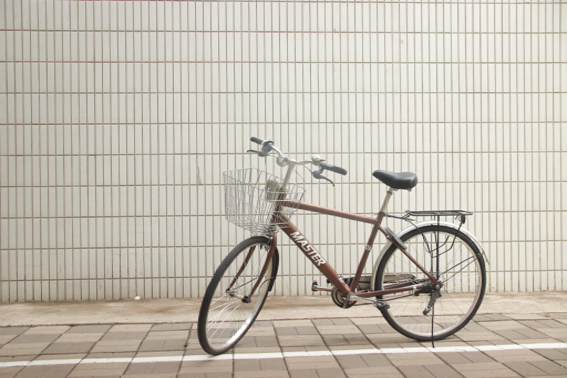
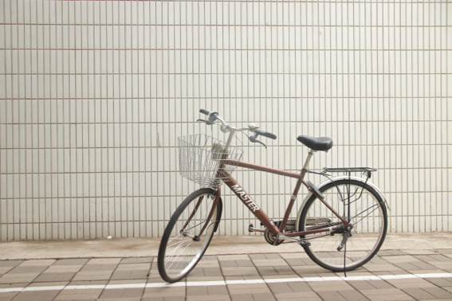
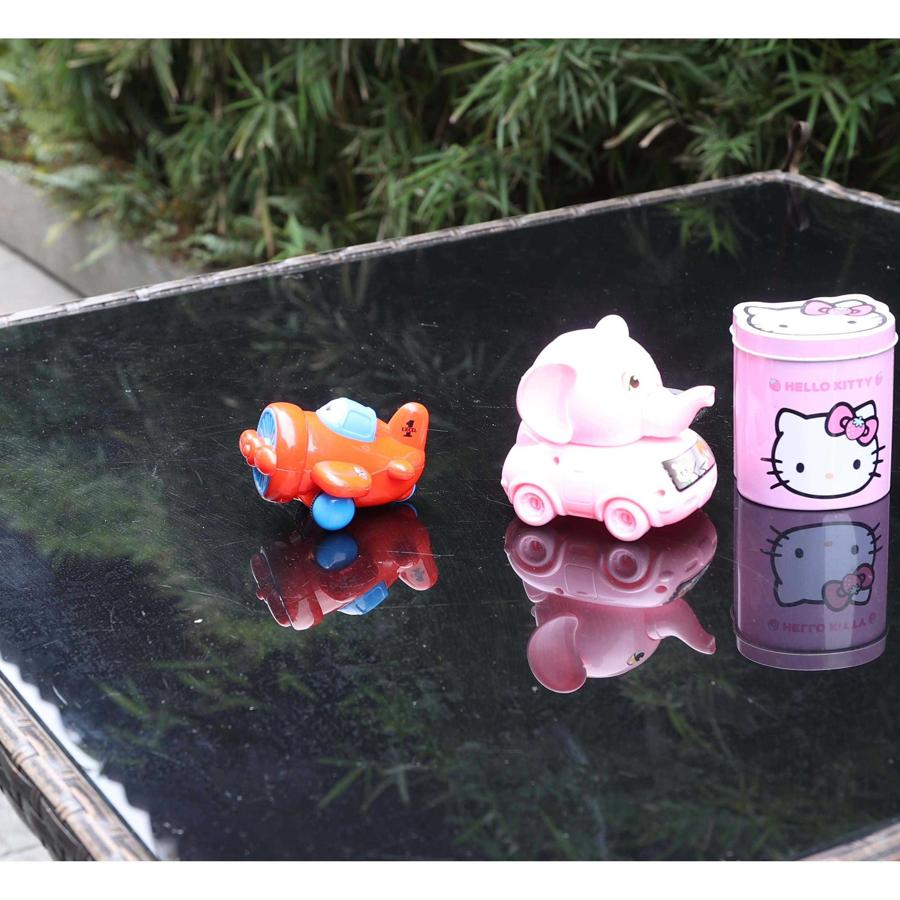
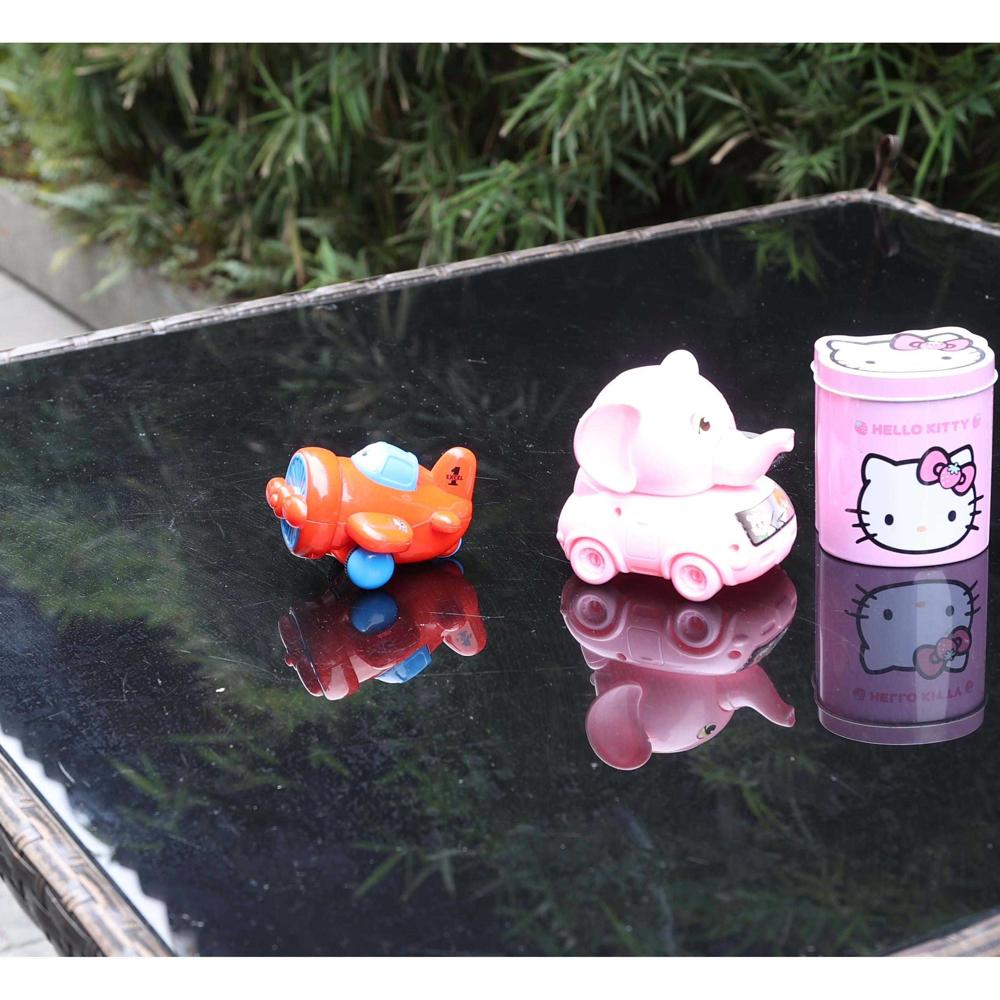
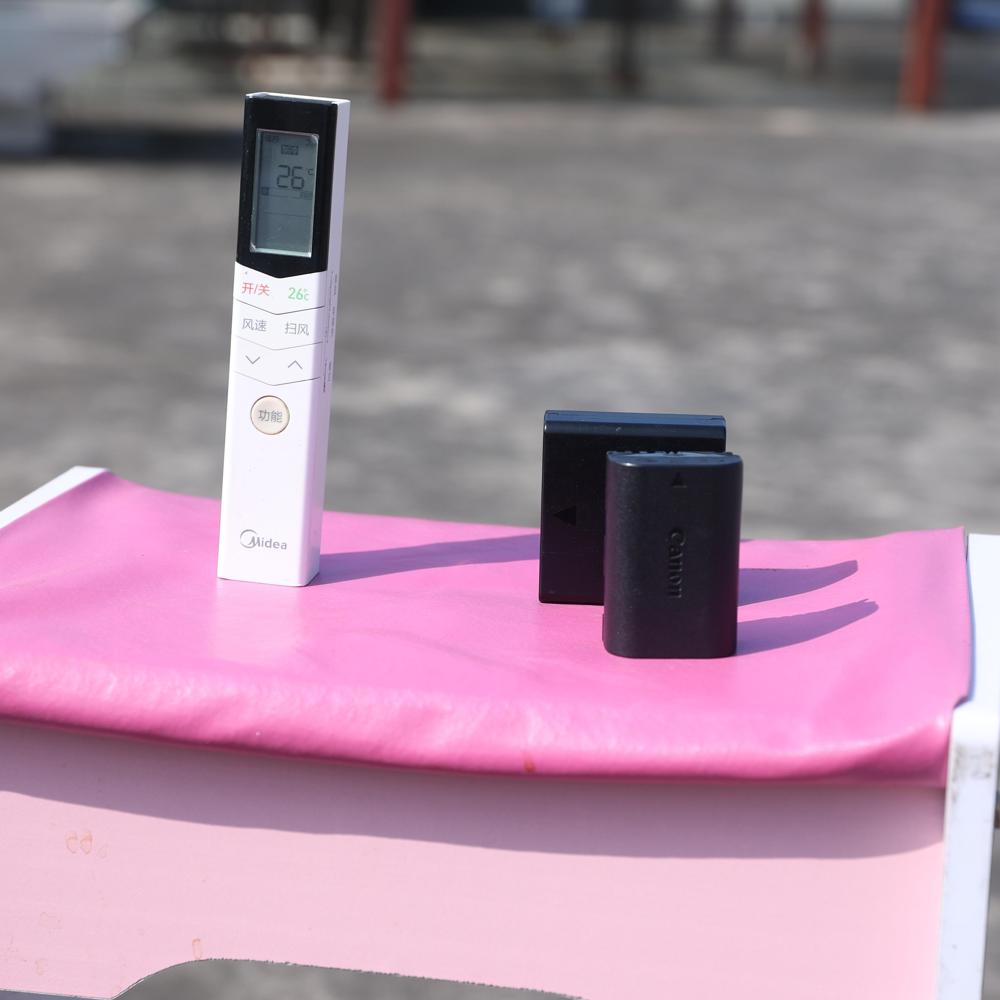
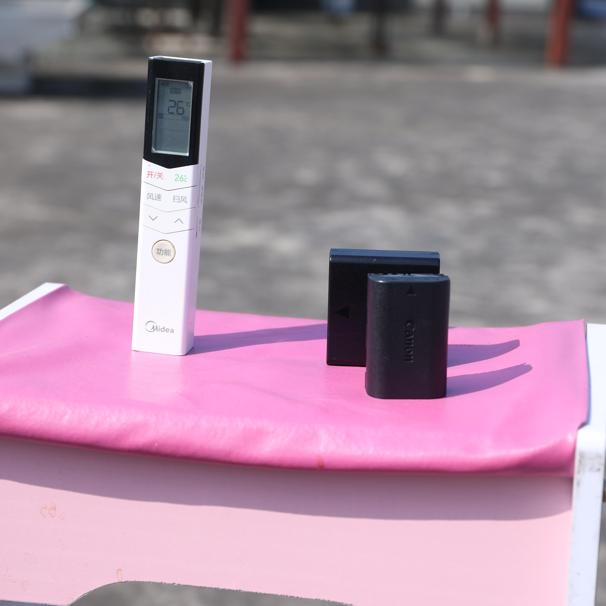
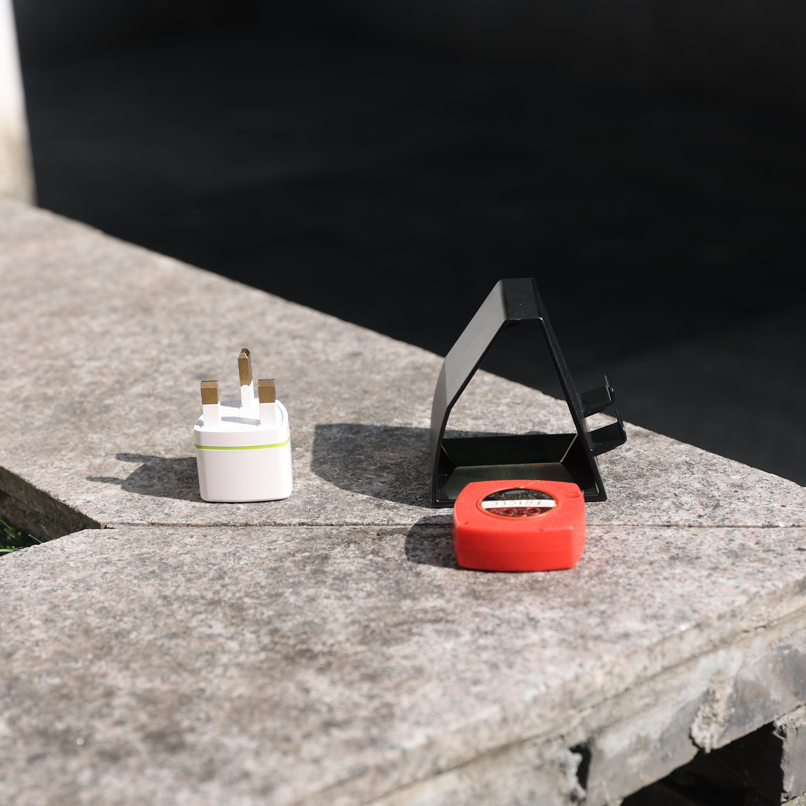
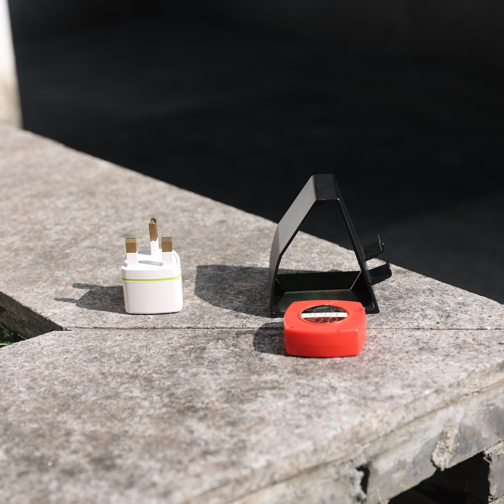

Recent advances in diffusion models have significantly improved image editing. However, challenges persist in handling geometric transformations, such as translation, rotation, and scaling, particularly in complex scenes. Existing approaches suffer from two main limitations: (1) difficulty in achieving accurate geometric editing of object translation, rotation, and scaling; (2) inadequate modeling of intricate lighting and shadow effects, leading to unrealistic results.
To address these issues, we propose GeoEdit, a framework that leverages in-context generation through a diffusion transformer module, which integrates geometric transformations for precise object edits. Moreover, we introduce Effects-Sensitive Attention, which enhances the modeling of intricate lighting and shadow effects for improved realism. To further support training, we construct RS-Objects, a large-scale geometric editing dataset containing over 120,000 high-quality image pairs, enabling the model to learn precise geometric editing while generating realistic lighting and shadows. Extensive experiments on public benchmarks demonstrate that GeoEdit consistently outperforms state-of-the-art methods in terms of visual quality, geometric accuracy, and realism.
 



 

 



 
